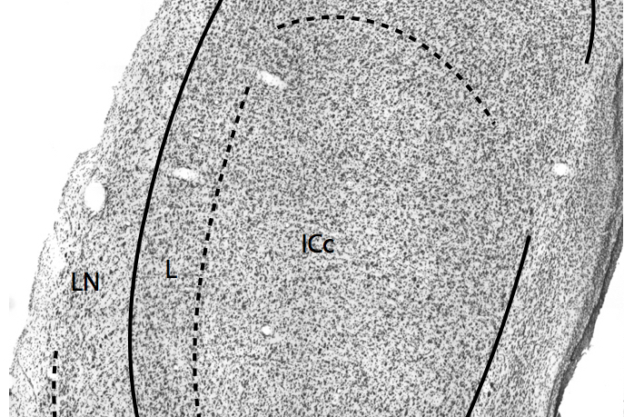
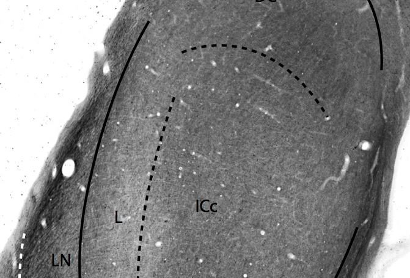
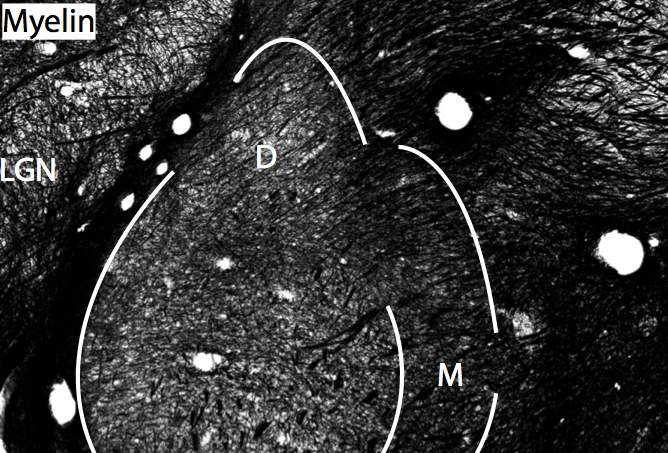

About Dan
My current research is focused on studying the physiological organization of the primate parietal cortex. In particular, I am studying the somatotopy of movement fields within the superior parietal lobe and its anatomical connectivity. Other research interests include the cellular composition and degree of myelination in brain regions of interest across primate taxa to determine the evolutionary origins of human neuroanatomical specialization(s).
Academic bio
Dan has a deep interest in the relationship between the brain and behavior, particularly as it concerns human nature. Understanding the nuts and bolts of human behavior requires detailed information on the functional organization of the brain. The Miller lab thus focuses on investigating the organization of the brain across different primate species in order to determine where and how the human brain is distinct, such that these neural specializations participate in the generation of those behaviors most people think make us different from other animals.
Dan is currently a graduate student and his dissertation is focused on studying the physiological organization of the primate parietal cortex. In particular, he is studying the somatotopy of movement fields within the superior parietal lobe and its anatomical connectivity which enables us to plan and execute movement (e.g. picking up that cup o’ Joe). Other research interests include the cellular composition and degree of myelination in brain regions of interest across primate taxa to determine the evolutionary origins of human neuroanatomy.
Research in the News
- PNAS Science Sessions: What makes us human? (01/2013)
- Neurology Today: How does myelination maturation affect thought and behavior? (11/2012)
- The Lancet Neurology (10/1/2012)
- ScienceDaily (9/25/2012)
- ScienceNOW (9/24/2012)
Publications

Miller et al., Prolonged myelination in human neocortical evolution, 2012
This paper explores some of the underlying neuroanatomical differences in the development of the human brain compared to our closest living genetic relative, the chimpanzee, and how these changes may be related to human cognition and health.

Miller et al., Development of myelination and cholinergic innervation in the central auditory system of a prosimian primate (Otolemur garnetti), 2013
This paper explores the evolution of brain development with respect to the auditory system (e.g. prerequisite for language) by examining the neuroanatomical and neurochemical changes that occur during development in prosimians, a group of primates useful because of their close evolutionary relationship to rodents.

Miller and Konopka, Evolution and development of language, 2014
This book chapter reviews the evolution and development of brain networks important to language, and the molecules that are known to impact specific processes necessary to the creation of these brain networks.

Miller et al., Three counting methods agree on cell and neuron number in chimpanzee primary visual cortex, 2014
This paper demonstrates the ability to estimate the cellular composition of specific brain areas using multiple methods. This work is important because determining the type and number of cells in the brain is an important metric in many studies of disease, development and evolutionary comparisons, and thus the ability to obtain comparable estimates using multiple technical procedures opens up the ability to more directly compare results between studies, facilitating our understanding of the relationship between the cellular composition and function of the brain.

Liao et al., Congenital foot deformation alters the topographic organization in the primate somatosensory system.
This paper investigates the organization of the brain networks subserving tactile perception (i.e. skin and tendons of the body), and how these networks may change as a result of congenital abnormalities (i.e. club foot).

Herculano-Houzel et al., How to count cells: the advantages and disadvantages of the isotropic fractionator compared with stereology, 2015
This paper reviews the most popular strategies to quantitatively investigate brain organization, including techniques to cut the brain into very thin slices (stereology) or to mechanically dissociate brain tissue into “soup” (isotropic fractionator). This review highlights a previous publication (Miller et al., 2014) to directly compare these methods.
Cooke et al., Reversible Deactivation of Motor Cortex Reveals Functional Connectivity with Posterior Parietal Cortex in the Prosimian Galago (Otolemur garnettii), 2015
This paper investigates the organization of the motor system by studying how properties of this system change when specific functional subdivisions within the system are inactivated.
Get In Touch
I am happy to discuss my research or collaborations. Feel free to drop me a line here or email me.
-Dan